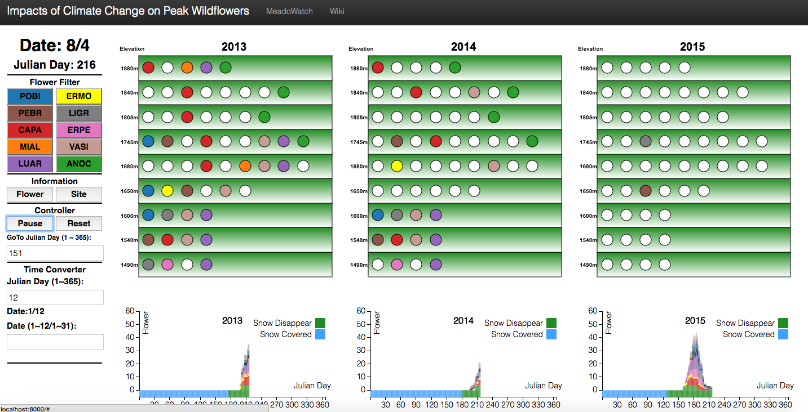

Visualizing Impact of Climate Change on Peak Flowers
Rachel Li, Xiaojing Zhu, Guanming Wang

Abstract: We develop an animated narrative visualization for the seasonal timing of flowering (i.e. wildflower phenology) in the high mountain meadows of Mt.Rainier to help phenologists understand the biological impacts of climate change. Data was collected by volunteers for 10 plant species at 9 locations along the east branch of the Lakes Trail over a large gradient in elevation from 2013 to 2015. In our visualization, we use animation to show the snowmelt events and the life cycle of wildflowers over time. The viewer watches the wildflower phenology and snowmelts as the animation plays and makes comparison among three years, seeing the relative impact that the climate change has had on the snowmelt date and the wildflower phenology. Our narrative visualization along with other interactive exploration functionalities aim to provide viewers an engaging and effective story-discovering experience along with some insight into the impact of climate change on wildflowers.